filter_low_k <- function(dat, V, moderator, min_k = 5) {
moderator <- rlang::ensym(moderator)
k_counts <- dat %>%
dplyr::count(!!moderator, name = "k_es")
keep_levels <- k_counts %>% dplyr::filter(k_es >= min_k) %>% dplyr::pull(!!moderator)
dat_f <- dat %>% dplyr::filter((!!moderator) %in% keep_levels)
idx <- which(dat[[rlang::as_string(moderator)]] %in% keep_levels)
V_f <- V[idx, idx]
list(data = dat_f, V = V_f, keep = keep_levels, k = k_counts)
}Uni-moderator (lnVR)
We fit uni-moderator multilevel meta-regressions for \(ln VR\) to test whether study characteristics predict changes in behavioral dispersion under music exposure. Negative \(ln VR\) values indicate reduced dispersion (more consistent responses), whereas positive values indicate increased dispersion. For moderators with sparse levels (\(k < 5\)), we removed those levels and subset the variance–covariance matrix to match the filtered dataset
Meta-regressions
f <- filter_low_k(db, VCV, Outcome_type, min_k = 5)
db_filtered <- f$data
VCV_filtered <- f$VmOT <- rma.mv(yi = lnVR,
V = VCV_filtered,
mods = ~ Outcome_type,
random = list(~1 | Study_ID,
~1 | ES_ID,
~1 | Strain),
test = "t",
method = "REML",
sparse = TRUE,
data = db_filtered)
summary(mOT)
Multivariate Meta-Analysis Model (k = 219; method: REML)
logLik Deviance AIC BIC AICc
-339.3184 678.6368 688.6368 705.5363 688.9211
Variance Components:
estim sqrt nlvls fixed factor
sigma^2.1 0.1310 0.3620 16 no Study_ID
sigma^2.2 1.1825 1.0874 219 no ES_ID
sigma^2.3 0.0000 0.0001 6 no Strain
Test for Residual Heterogeneity:
QE(df = 217) = 4218.8132, p-val < .0001
Test of Moderators (coefficient 2):
F(df1 = 1, df2 = 217) = 8.3073, p-val = 0.0043
Model Results:
estimate se tval df pval ci.lb
intrcpt 0.3112 0.1520 2.0473 217 0.0418 0.0116
Outcome_typeDepression -0.6401 0.2221 -2.8822 217 0.0043 -1.0779
ci.ub
intrcpt 0.6107 *
Outcome_typeDepression -0.2024 **
---
Signif. codes: 0 '***' 0.001 '**' 0.01 '*' 0.05 '.' 0.1 ' ' 1r2OT <- round(r2_ml(mOT), 4)
r2OT R2_marginal R2_conditional
0.0537 0.1481 orchard_outcome<-orchard_plot(mOT,
mod = "Outcome_type",
group = "Study_ID",
xlab = expression(lnVR),trunk.size = 0.3,
branch.size = 2 ,alpha = 0.3
) +
scale_colour_brewer(palette = "Set1") +
scale_fill_brewer(palette = "Dark2")+scale_y_continuous(limits = c(-6,11),breaks = seq(-6, 10, by = 2),
minor_breaks = seq(-6, 11, by = 1 ))
orchard_outcome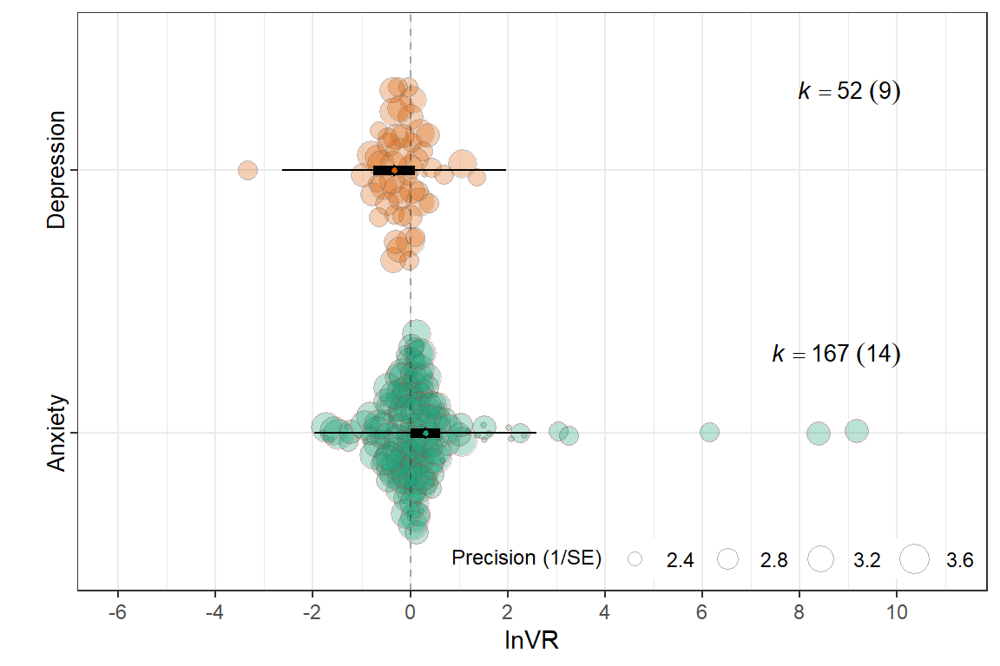
mLE <- rma.mv(yi = lnVR,
V = VCV,
mods = ~ Lifestage_exposure-1,
random = list(~1 | Study_ID,
~1 | ES_ID,
~1 | Strain),
test = "t",
method = "REML",
sparse = TRUE,
data = db)
summary(mLE)
Multivariate Meta-Analysis Model (k = 222; method: REML)
logLik Deviance AIC BIC AICc
-339.3525 678.7050 696.7050 727.0825 697.5788
Variance Components:
estim sqrt nlvls fixed factor
sigma^2.1 0.0263 0.1621 16 no Study_ID
sigma^2.2 1.2491 1.1176 222 no ES_ID
sigma^2.3 0.0000 0.0000 6 no Strain
Test for Residual Heterogeneity:
QE(df = 216) = 4359.9557, p-val < .0001
Test of Moderators (coefficients 1:6):
F(df1 = 6, df2 = 216) = 1.1160, p-val = 0.3539
Model Results:
estimate se tval df pval ci.lb
Lifestage_exposureAdolescent 0.7391 0.3236 2.2844 216 0.0233 0.1014
Lifestage_exposureAdult -0.0508 0.2667 -0.1903 216 0.8492 -0.5764
Lifestage_exposureJuvenile 0.0347 0.5057 0.0685 216 0.9454 -0.9621
Lifestage_exposureMixed -0.1120 0.2389 -0.4687 216 0.6398 -0.5829
Lifestage_exposureUnclear 0.1922 0.3773 0.5094 216 0.6110 -0.5515
Lifestage_exposureYoung adult 0.1715 0.1561 1.0988 216 0.2731 -0.1361
ci.ub
Lifestage_exposureAdolescent 1.3768 *
Lifestage_exposureAdult 0.4749
Lifestage_exposureJuvenile 1.0315
Lifestage_exposureMixed 0.3589
Lifestage_exposureUnclear 0.9359
Lifestage_exposureYoung adult 0.4791
---
Signif. codes: 0 '***' 0.001 '**' 0.01 '*' 0.05 '.' 0.1 ' ' 1r2LE <- round(r2_ml(mLE), 4)
r2LE R2_marginal R2_conditional
0.0388 0.0586 summary(glht(mLE, linfct=cbind(contrMat(rep(1,6), type="Tukey"))), test=adjusted("none"))
Simultaneous Tests for General Linear Hypotheses
Fit: rma.mv(yi = lnVR, V = VCV, mods = ~Lifestage_exposure - 1, data = db,
random = list(~1 | Study_ID, ~1 | ES_ID, ~1 | Strain), method = "REML",
test = "t", sparse = TRUE)
Linear Hypotheses:
Estimate Std. Error z value Pr(>|z|)
2 - 1 == 0 -0.78987 0.40549 -1.948 0.0514 .
3 - 1 == 0 -0.70446 0.56920 -1.238 0.2159
4 - 1 == 0 -0.85110 0.40220 -2.116 0.0343 *
5 - 1 == 0 -0.54692 0.49456 -1.106 0.2688
6 - 1 == 0 -0.56763 0.35356 -1.605 0.1084
3 - 2 == 0 0.08541 0.54910 0.156 0.8764
4 - 2 == 0 -0.06122 0.35804 -0.171 0.8642
5 - 2 == 0 0.24296 0.46018 0.528 0.5975
6 - 2 == 0 0.22225 0.30441 0.730 0.4653
4 - 3 == 0 -0.14663 0.55932 -0.262 0.7932
5 - 3 == 0 0.15754 0.62662 0.251 0.8015
6 - 3 == 0 0.13683 0.52068 0.263 0.7927
5 - 4 == 0 0.30418 0.44658 0.681 0.4958
6 - 4 == 0 0.28347 0.28538 0.993 0.3206
6 - 5 == 0 -0.02071 0.37038 -0.056 0.9554
---
Signif. codes: 0 '***' 0.001 '**' 0.01 '*' 0.05 '.' 0.1 ' ' 1
(Adjusted p values reported -- none method)lifestage_labels <- c(
"Adolescent" = "Adol.",
"Adult" = "Adult",
"Juvenile" = "Juv.",
"Young adult" = "Y. adult",
"Mixed" = "Mixed",
"Unclear" = "Unclear"
)
orchard_lifestage<-orchard_plot(mLE,legend.pos = "top.left",
mod = "Lifestage_exposure",
group = "Study_ID",
xlab = expression(lnVR), trunk.size = 0.3,
branch.size = 2 ,alpha = 0.3
) + scale_x_discrete(labels = lifestage_labels)+
scale_colour_brewer(palette = "Set1") +
scale_fill_brewer(palette = "Dark2")+scale_y_continuous(limits=c(-6,10.5),breaks = seq(-6, 10, by = 2),
minor_breaks = seq(-6, 10, by = 1 ))+
theme(legend.direction = "vertical")
orchard_lifestage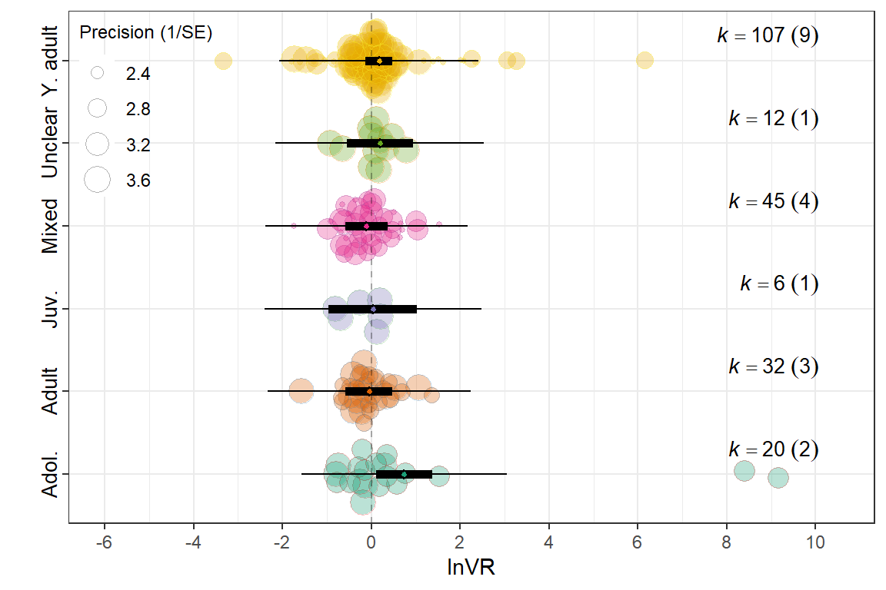
f <- filter_low_k(db, VCV, Sex, min_k = 5)
db_filtered <- f$data
VCV_filtered <- f$VmSX <- rma.mv(yi = lnVR,
V = VCV_filtered,
mods = ~ Sex,
random = list(~1 | Study_ID,
~1 | ES_ID,
~1 | Strain),
test = "t",
method = "REML",
sparse = TRUE,
data = db_filtered)
summary(mSX)
Multivariate Meta-Analysis Model (k = 219; method: REML)
logLik Deviance AIC BIC AICc
-342.8395 685.6790 695.6790 712.5785 695.9634
Variance Components:
estim sqrt nlvls fixed factor
sigma^2.1 0.0900 0.3001 15 no Study_ID
sigma^2.2 1.2406 1.1138 219 no ES_ID
sigma^2.3 0.0000 0.0001 6 no Strain
Test for Residual Heterogeneity:
QE(df = 217) = 4383.5230, p-val < .0001
Test of Moderators (coefficient 2):
F(df1 = 1, df2 = 217) = 0.3114, p-val = 0.5774
Model Results:
estimate se tval df pval ci.lb ci.ub
intrcpt 0.0666 0.2034 0.3275 217 0.7436 -0.3342 0.4675
SexMale 0.1276 0.2287 0.5580 217 0.5774 -0.3232 0.5784
---
Signif. codes: 0 '***' 0.001 '**' 0.01 '*' 0.05 '.' 0.1 ' ' 1r2SX <- round(r2_ml(mSX), 4)
r2SX R2_marginal R2_conditional
0.0030 0.0704 orchard_sex<-orchard_plot(mSX, legend.pos = "top.left",
mod = "Sex",
group = "Study_ID",
xlab = expression(lnVR),
flip = T,trunk.size = 0.3,
branch.size = 2 ,alpha = 0.3) +
scale_colour_brewer(palette = "Set1") +
scale_fill_brewer(palette = "Dark2")+scale_y_continuous(limits=c(-6,10.5),breaks = seq(-8, 10, by = 2),
minor_breaks = seq(-8, 10, by = 1 ))+
theme(legend.direction = "vertical")
orchard_sex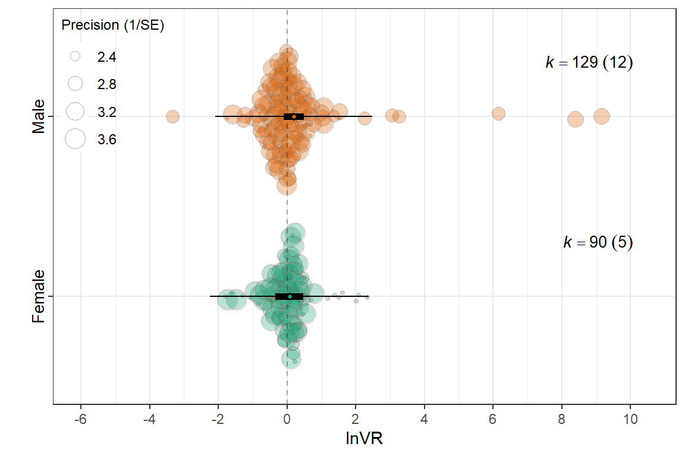
Meta_genre
mMG <- rma.mv(yi = lnVR,
V = VCV,
mods = ~ Meta_genre-1 ,
random = list(~1 | Study_ID,
~1 | ES_ID,
~1 | Strain),
test = "t",
method = "REML",
sparse = TRUE,
data = db)
summary(mMG)
Multivariate Meta-Analysis Model (k = 222; method: REML)
logLik Deviance AIC BIC AICc
-338.3565 676.7131 690.7131 714.4045 691.2464
Variance Components:
estim sqrt nlvls fixed factor
sigma^2.1 0.0000 0.0000 16 no Study_ID
sigma^2.2 1.2200 1.1045 222 no ES_ID
sigma^2.3 0.0000 0.0000 6 no Strain
Test for Residual Heterogeneity:
QE(df = 218) = 4375.2042, p-val < .0001
Test of Moderators (coefficients 1:4):
F(df1 = 4, df2 = 218) = 3.7277, p-val = 0.0059
Model Results:
estimate se tval df
Meta_genreMixed -0.0639 0.2850 -0.2243 218
Meta_genrePopular Contemporary Music 0.9563 0.3203 2.9859 218
Meta_genreTraditional Music / Folk / World 1.1263 0.4627 2.4341 218
Meta_genreWestern Art Music / Orchestral -0.0212 0.1180 -0.1793 218
pval ci.lb ci.ub
Meta_genreMixed 0.8228 -0.6256 0.4978
Meta_genrePopular Contemporary Music 0.0032 0.3251 1.5876 **
Meta_genreTraditional Music / Folk / World 0.0157 0.2143 2.0383 *
Meta_genreWestern Art Music / Orchestral 0.8579 -0.2538 0.2115
---
Signif. codes: 0 '***' 0.001 '**' 0.01 '*' 0.05 '.' 0.1 ' ' 1r2MG <- round(r2_ml(mMG), 4)
r2MG R2_marginal R2_conditional
0.0841 0.0841 summary(glht(mMG, linfct=cbind(contrMat(rep(1,4), type="Tukey"))), test=adjusted("none"))
Simultaneous Tests for General Linear Hypotheses
Fit: rma.mv(yi = lnVR, V = VCV, mods = ~Meta_genre - 1, data = db,
random = list(~1 | Study_ID, ~1 | ES_ID, ~1 | Strain), method = "REML",
test = "t", sparse = TRUE)
Linear Hypotheses:
Estimate Std. Error z value Pr(>|z|)
2 - 1 == 0 1.02023 0.42497 2.401 0.0164 *
3 - 1 == 0 1.19024 0.54342 2.190 0.0285 *
4 - 1 == 0 0.04276 0.30703 0.139 0.8892
3 - 2 == 0 0.17001 0.56173 0.303 0.7622
4 - 2 == 0 -0.97748 0.33961 -2.878 0.0040 **
4 - 3 == 0 -1.14749 0.47737 -2.404 0.0162 *
---
Signif. codes: 0 '***' 0.001 '**' 0.01 '*' 0.05 '.' 0.1 ' ' 1
(Adjusted p values reported -- none method)genre_labels <- c(
"Mixed" = "Mixed",
"Popular Contemporary Music" = "Contemporary",
"Traditional Music / Folk / World" = "World",
"Western Art Music / Orchestral" = "Orchestral"
)
orchard_genre<-orchard_plot(mMG,legend.pos = "top.left",
mod = "Meta_genre",
group = "Study_ID",
xlab = "lnVR",
flip = T,trunk.size = 0.3,
branch.size = 2,alpha = 0.3) +
scale_x_discrete(labels = genre_labels)+
scale_colour_brewer(palette = "Set1") +
scale_fill_brewer(palette = "Dark2")+scale_y_continuous(limits=c(-6,11),breaks = seq(-8, 10, by = 2),
minor_breaks = seq(-8, 10, by = 1 ))+
theme(legend.direction = "vertical")
orchard_genre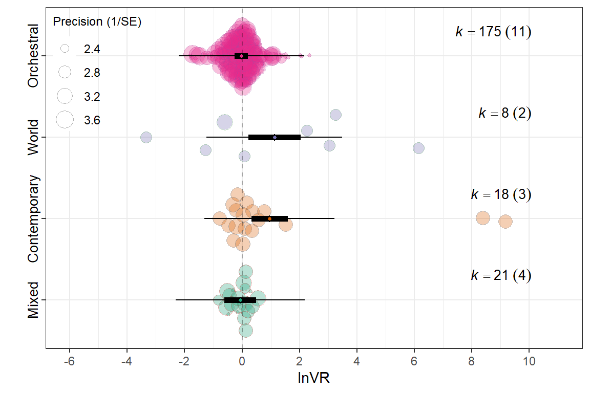
Music_exposure_duration
f <- filter_low_k(db, VCV, Music_exposure_duration, min_k = 5)
db_filtered <- f$data
VCV_filtered <- f$VmMED <- rma.mv(yi = lnVR,
V = VCV_filtered,
mods = ~ Music_exposure_duration-1,
random = list(~1 | Study_ID,
~1 | ES_ID,
~1 | Strain),
test = "t",
method = "REML",
sparse = TRUE,
data = db_filtered)
summary(mMED)
Multivariate Meta-Analysis Model (k = 222; method: REML)
logLik Deviance AIC BIC AICc
-344.5642 689.1285 701.1285 721.4629 701.5247
Variance Components:
estim sqrt nlvls fixed factor
sigma^2.1 0.1181 0.3437 16 no Study_ID
sigma^2.2 1.2224 1.1056 222 no ES_ID
sigma^2.3 0.0000 0.0001 6 no Strain
Test for Residual Heterogeneity:
QE(df = 219) = 4390.2022, p-val < .0001
Test of Moderators (coefficients 1:3):
F(df1 = 3, df2 = 219) = 0.5542, p-val = 0.6458
Model Results:
estimate se tval df pval ci.lb
Music_exposure_durationAcute 0.2718 0.2202 1.2345 219 0.2183 -0.1621
Music_exposure_durationMedium 0.0052 0.2628 0.0198 219 0.9843 -0.5127
Music_exposure_durationShort 0.0873 0.2348 0.3717 219 0.7105 -0.3754
ci.ub
Music_exposure_durationAcute 0.7057
Music_exposure_durationMedium 0.5231
Music_exposure_durationShort 0.5499
---
Signif. codes: 0 '***' 0.001 '**' 0.01 '*' 0.05 '.' 0.1 ' ' 1r2MED <- round(r2_ml(mMED), 4)
r2MED R2_marginal R2_conditional
0.0101 0.0973 summary(glht(mMED, linfct=cbind(contrMat(rep(1,3), type="Tukey"))), test=adjusted("none"))
Simultaneous Tests for General Linear Hypotheses
Fit: rma.mv(yi = lnVR, V = VCV_filtered, mods = ~Music_exposure_duration -
1, data = db_filtered, random = list(~1 | Study_ID, ~1 |
ES_ID, ~1 | Strain), method = "REML", test = "t", sparse = TRUE)
Linear Hypotheses:
Estimate Std. Error z value Pr(>|z|)
2 - 1 == 0 -0.26659 0.34281 -0.778 0.437
3 - 1 == 0 -0.18452 0.32184 -0.573 0.566
3 - 2 == 0 0.08207 0.35236 0.233 0.816
(Adjusted p values reported -- none method)orchard_exposure<-orchard_plot( mMED,legend.pos = "top.left",
mod = "Music_exposure_duration",
group = "Study_ID",
xlab = "lnVR",
flip = T,trunk.size = 0.3,
branch.size = 2, alpha = 0.3) +
scale_colour_brewer(palette = "Set1") +
scale_fill_brewer(palette = "Dark2")+scale_y_continuous(limits = c(-6,11),breaks = seq(-8, 11, by = 2),
minor_breaks = seq(-8, 11, by = 1 ))+
theme(legend.direction = "vertical")
orchard_exposure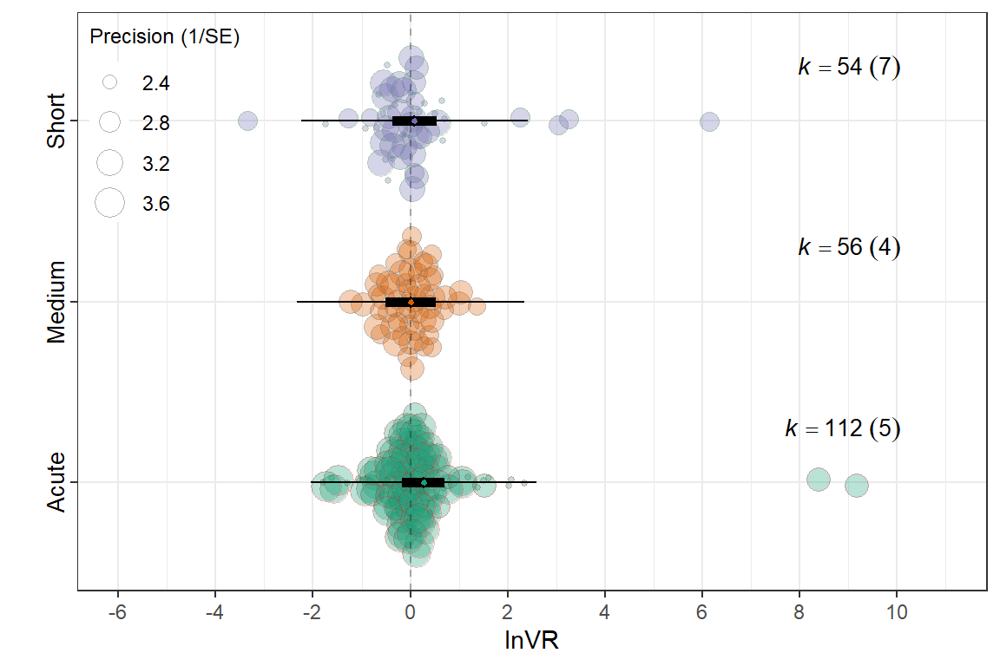
mEXD <- rma.mv(yi = lnVR,
V = VCV,
mods = ~ Experimental_design-1,
random = list(~1 | Study_ID,
~1 | ES_ID,
~1 | Strain),
test = "t",
method = "REML",
sparse = TRUE,
data = db)
summary(mEXD)
Multivariate Meta-Analysis Model (k = 222; method: REML)
logLik Deviance AIC BIC AICc
-341.4846 682.9693 694.9693 715.3037 695.3655
Variance Components:
estim sqrt nlvls fixed factor
sigma^2.1 0.0000 0.0001 16 no Study_ID
sigma^2.2 1.2318 1.1099 222 no ES_ID
sigma^2.3 0.0000 0.0000 6 no Strain
Test for Residual Heterogeneity:
QE(df = 219) = 4376.1207, p-val < .0001
Test of Moderators (coefficients 1:3):
F(df1 = 3, df2 = 219) = 3.6274, p-val = 0.0138
Model Results:
estimate se tval df
Experimental_designFactorial 0.0225 0.1185 0.1899 219
Experimental_designPosttest-Only Control Group 0.6459 0.2007 3.2188 219
Experimental_designRepeated Measures -0.2031 0.3078 -0.6598 219
pval ci.lb ci.ub
Experimental_designFactorial 0.8496 -0.2110 0.2560
Experimental_designPosttest-Only Control Group 0.0015 0.2504 1.0414 **
Experimental_designRepeated Measures 0.5101 -0.8097 0.4035
---
Signif. codes: 0 '***' 0.001 '**' 0.01 '*' 0.05 '.' 0.1 ' ' 1r2EXD <- round(r2_ml(mEXD), 4)
r2EXD R2_marginal R2_conditional
0.056 0.056 summary(glht(mEXD, linfct=cbind(contrMat(rep(1,3), type="Tukey"))), test=adjusted("none"))
Simultaneous Tests for General Linear Hypotheses
Fit: rma.mv(yi = lnVR, V = VCV, mods = ~Experimental_design - 1, data = db,
random = list(~1 | Study_ID, ~1 | ES_ID, ~1 | Strain), method = "REML",
test = "t", sparse = TRUE)
Linear Hypotheses:
Estimate Std. Error z value Pr(>|z|)
2 - 1 == 0 0.6234 0.2173 2.869 0.00412 **
3 - 1 == 0 -0.2256 0.3298 -0.684 0.49399
3 - 2 == 0 -0.8490 0.3674 -2.311 0.02085 *
---
Signif. codes: 0 '***' 0.001 '**' 0.01 '*' 0.05 '.' 0.1 ' ' 1
(Adjusted p values reported -- none method)design_labels<-c(
"Factorial"="Factorial",
"Posttest-Only Control Group"="Posttest",
"Repeated Measures"="Repeated"
)
orchard_design<-orchard_plot(mEXD,legend.pos = "top.left",
mod = "Experimental_design",
group = "Study_ID",
xlab = expression(lnVR),
flip=T,
trunk.size = 0.3,
branch.size = 2,alpha = 0.3 ) +
scale_x_discrete(labels = design_labels) +
scale_colour_brewer(palette = "Set1") +
scale_fill_brewer(palette = "Dark2")+scale_y_continuous(limits = c(-6,10.5),breaks = seq(-8, 10, by = 2),
minor_breaks = seq(-8, 10, by = 1 ))+
theme(legend.direction = "vertical")
orchard_design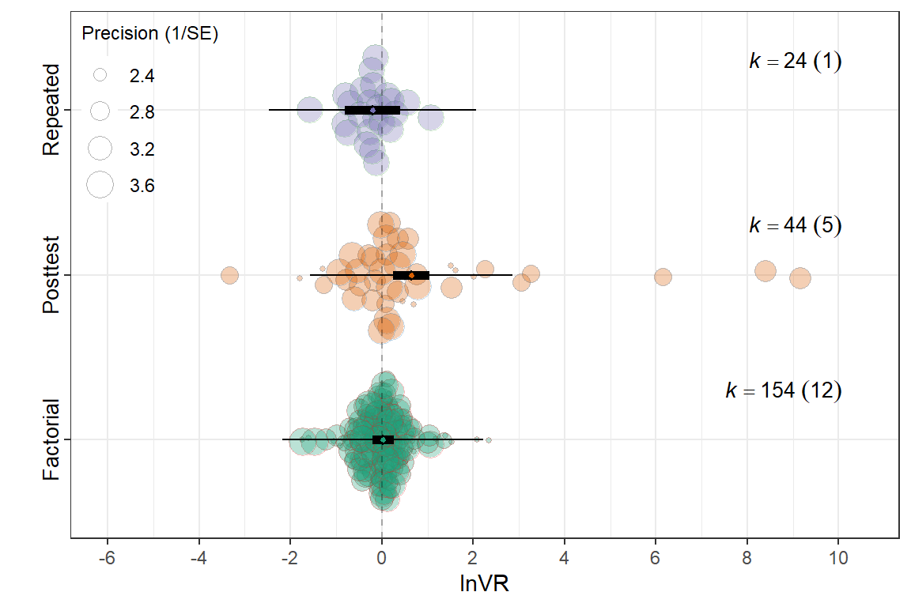
mIB <- rma.mv(yi = lnVR,
V = VCV,
mods = ~ `Induced behaviour` ,
random = list(~1 | Study_ID,
~1 | ES_ID,
~1 | Strain),
test = "t",
method = "REML",
sparse = TRUE,
data = db)
summary(mIB)
Multivariate Meta-Analysis Model (k = 222; method: REML)
logLik Deviance AIC BIC AICc
-346.5856 693.1713 703.1713 720.1394 703.4517
Variance Components:
estim sqrt nlvls fixed factor
sigma^2.1 0.0926 0.3043 16 no Study_ID
sigma^2.2 1.2261 1.1073 222 no ES_ID
sigma^2.3 0.0000 0.0001 6 no Strain
Test for Residual Heterogeneity:
QE(df = 220) = 4389.9716, p-val < .0001
Test of Moderators (coefficient 2):
F(df1 = 1, df2 = 220) = 0.2942, p-val = 0.5881
Model Results:
estimate se tval df pval ci.lb
intrcpt 0.2494 0.2478 1.0064 220 0.3153 -0.2390
`Induced behaviour`Innate -0.1461 0.2694 -0.5424 220 0.5881 -0.6771
ci.ub
intrcpt 0.7378
`Induced behaviour`Innate 0.3848
---
Signif. codes: 0 '***' 0.001 '**' 0.01 '*' 0.05 '.' 0.1 ' ' 1r2IB <- round(r2_ml(mIB), 4)
r2IB R2_marginal R2_conditional
0.0022 0.0723 orchard_behaviour<-orchard_plot(mIB,
mod = "Induced behaviour",legend.pos = "top.left",
group = "Study_ID",
xlab = expression(lnVR),
flip = T,trunk.size = 0.3,
branch.size = 2,alpha = 0.3)+
scale_colour_brewer(palette = "Set1") +
scale_fill_brewer(palette = "Dark2")+scale_y_continuous(limits = c(-6,10.5),breaks = seq(-8, 10, by = 2),
minor_breaks = seq(-8, 10, by = 1 ))+ theme(legend.direction = "vertical")
orchard_behaviour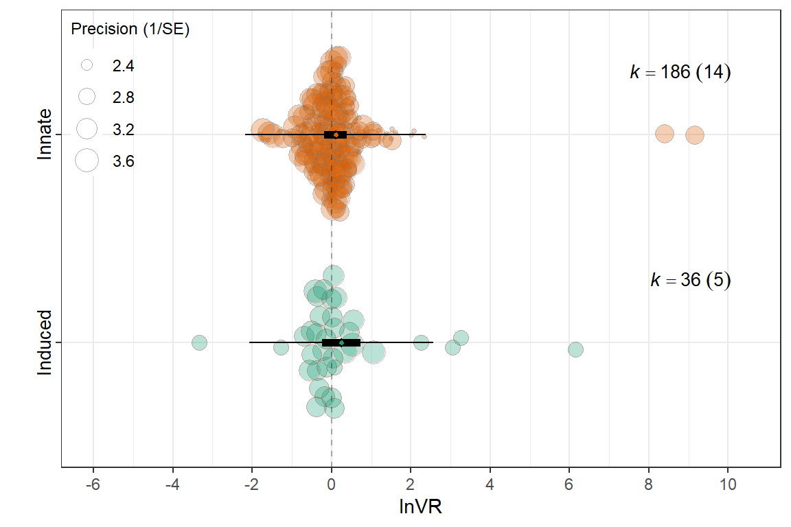
mRT <- rma.mv(yi = lnVR,
V = VCV,
mods = ~ Relative_timing-1,
random = list(~1 | Study_ID,
~1 | ES_ID,
~1 | Strain),
test = "t",
method = "REML",
data = db)
summary(mRT)
Multivariate Meta-Analysis Model (k = 222; method: REML)
logLik Deviance AIC BIC AICc
-345.0522 690.1044 702.1044 722.4389 702.5006
Variance Components:
estim sqrt nlvls fixed factor
sigma^2.1 0.0962 0.3102 16 no Study_ID
sigma^2.2 1.2301 1.1091 222 no ES_ID
sigma^2.3 0.0000 0.0001 6 no Strain
Test for Residual Heterogeneity:
QE(df = 219) = 4389.4876, p-val < .0001
Test of Moderators (coefficients 1:3):
F(df1 = 3, df2 = 219) = 0.4882, p-val = 0.6908
Model Results:
estimate se tval df pval ci.lb
Relative_timingBefore 0.1733 0.1445 1.1996 219 0.2316 -0.1114
Relative_timingBoth -0.0209 0.2902 -0.0721 219 0.9426 -0.5928
Relative_timingConcurrent 0.0074 0.5409 0.0136 219 0.9891 -1.0587
ci.ub
Relative_timingBefore 0.4581
Relative_timingBoth 0.5509
Relative_timingConcurrent 1.0735
---
Signif. codes: 0 '***' 0.001 '**' 0.01 '*' 0.05 '.' 0.1 ' ' 1r2RT <- round(r2_ml(mRT), 4)
r2RT R2_marginal R2_conditional
0.0055 0.0776 summary(glht(mRT, linfct=cbind(contrMat(rep(1,3), type="Tukey"))), test=adjusted("none"))
Simultaneous Tests for General Linear Hypotheses
Fit: rma.mv(yi = lnVR, V = VCV, mods = ~Relative_timing - 1, data = db,
random = list(~1 | Study_ID, ~1 | ES_ID, ~1 | Strain), method = "REML",
test = "t")
Linear Hypotheses:
Estimate Std. Error z value Pr(>|z|)
2 - 1 == 0 -0.19425 0.31647 -0.614 0.539
3 - 1 == 0 -0.16596 0.54716 -0.303 0.762
3 - 2 == 0 0.02829 0.56931 0.050 0.960
(Adjusted p values reported -- none method)orchard_timing<-orchard_plot(mRT,,legend.pos = "top.left",
mod = "Relative_timing",
group = "Study_ID",
xlab = expression(lnVR),trunk.size = 0.3,
branch.size = 1) +
scale_colour_brewer(palette = "Set1") +
scale_fill_brewer(palette = "Dark2")+scale_y_continuous(limits = c(-6,10.5),breaks = seq(-8, 10, by = 2),
minor_breaks = seq(-8, 10, by = 1 ))+ theme(legend.direction = "vertical")
orchard_timing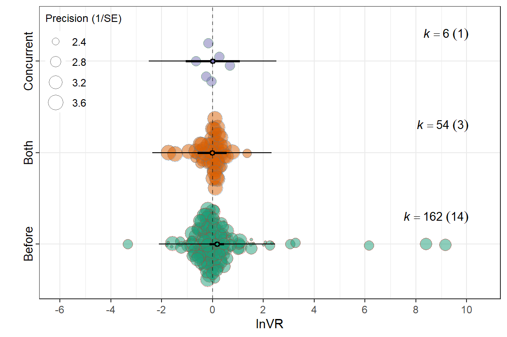
mEXP <- rma.mv(yi = lnVR,
V = VCV,
mods = ~ Experimental_procedures,
random = list(~1 | Study_ID,
~1 | ES_ID,
~1 | Strain),
test = "t",
method = "REML",
data = db)
summary(mEXP)
Multivariate Meta-Analysis Model (k = 222; method: REML)
logLik Deviance AIC BIC AICc
-346.5640 693.1281 703.1281 720.0962 703.4085
Variance Components:
estim sqrt nlvls fixed factor
sigma^2.1 0.0901 0.3001 16 no Study_ID
sigma^2.2 1.2265 1.1075 222 no ES_ID
sigma^2.3 0.0000 0.0001 6 no Strain
Test for Residual Heterogeneity:
QE(df = 220) = 4386.6575, p-val < .0001
Test of Moderators (coefficient 2):
F(df1 = 1, df2 = 220) = 0.2591, p-val = 0.6112
Model Results:
estimate se tval df pval ci.lb
intrcpt 0.1558 0.1362 1.1438 220 0.2539 -0.1126
Experimental_proceduresSham -0.1239 0.2434 -0.5090 220 0.6112 -0.6036
ci.ub
intrcpt 0.4242
Experimental_proceduresSham 0.3558
---
Signif. codes: 0 '***' 0.001 '**' 0.01 '*' 0.05 '.' 0.1 ' ' 1r2EXP <- round(r2_ml(mEXP), 4)
r2EXP R2_marginal R2_conditional
0.0021 0.0704 orchard_exp<-orchard_plot(mEXP,legend.pos = "top.left",
mod = "Experimental_procedures",
group = "Study_ID",
xlab = expression(lnVR),trunk.size = 0.3,
branch.size = 2,alpha = 0.3) +
scale_colour_brewer(palette = "Set1") +
scale_fill_brewer(palette = "Dark2")+scale_y_continuous(limits = c(-6,10.5),breaks = seq(-8, 10, by = 2),
minor_breaks = seq(-8, 10, by = 1 ))+ theme(legend.direction = "vertical")
orchard_exp
mCC <- rma.mv(yi = lnVR,
V = VCV,
mods = ~ Control_conditions,
random = list(~1 | Study_ID,
~1 | ES_ID,
~1 | Strain),
test = "t",
method = "REML",
data = db)
summary(mCC)
Multivariate Meta-Analysis Model (k = 222; method: REML)
logLik Deviance AIC BIC AICc
-346.6305 693.2609 703.2609 720.2291 703.5413
Variance Components:
estim sqrt nlvls fixed factor
sigma^2.1 0.0857 0.2927 16 no Study_ID
sigma^2.2 1.2273 1.1078 222 no ES_ID
sigma^2.3 0.0000 0.0001 6 no Strain
Test for Residual Heterogeneity:
QE(df = 220) = 4380.6933, p-val < .0001
Test of Moderators (coefficient 2):
F(df1 = 1, df2 = 220) = 0.3657, p-val = 0.5460
Model Results:
estimate se tval df pval ci.lb
intrcpt 0.1497 0.1311 1.1415 220 0.2549 -0.1087
Control_conditionswhite noise -0.1533 0.2535 -0.6047 220 0.5460 -0.6530
ci.ub
intrcpt 0.4081
Control_conditionswhite noise 0.3463
---
Signif. codes: 0 '***' 0.001 '**' 0.01 '*' 0.05 '.' 0.1 ' ' 1r2CC <- round(r2_ml(mCC), 4)
r2CC R2_marginal R2_conditional
0.0023 0.0674 control_labels <- c(
"ambiet sound" = "Ambient sound",
"Ambiet sound" = "Ambient sound", # optional safeguard if both exist
"White noise" = "White noise"
)
orchard_control<-orchard_plot(mCC,legend.pos = "top.left",
mod = "Control_conditions",
group = "Study_ID",
xlab = expression(lnVR),trunk.size = 0.3,
branch.size = 2,alpha = 0.3) +
scale_x_discrete(labels = control_labels) +
scale_colour_brewer(palette = "Set1") +
scale_fill_brewer(palette = "Dark2")+scale_y_continuous(limits = c(-6,10.5),breaks = seq(-8, 10, by = 2),
minor_breaks = seq(-8, 10, by = 1 ))+ theme(legend.direction = "vertical")
orchard_control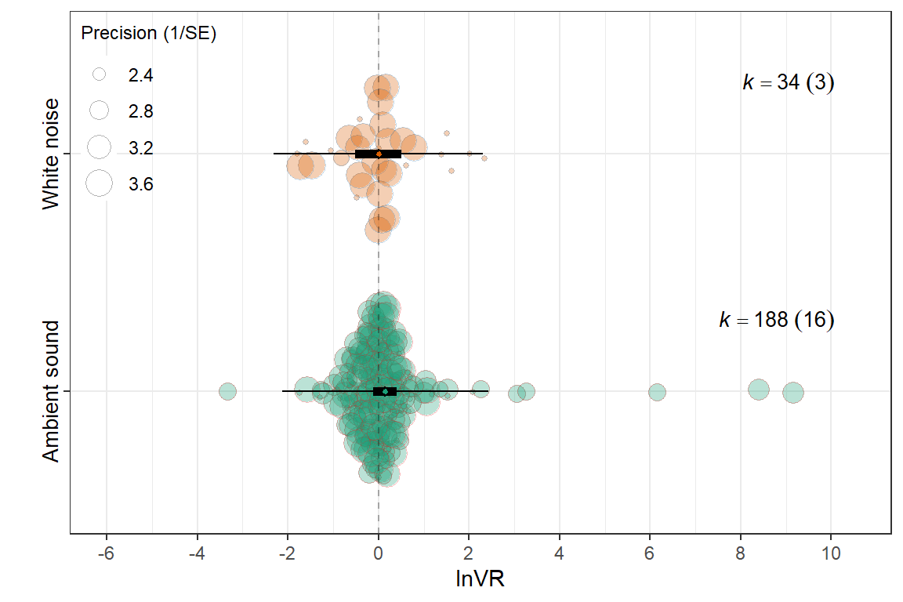
#| label: filter_assay_type
f <- filter_low_k(db, VCV, Assay_type, min_k = 5)
db_filtered <- f$data
VCV_filtered <- f$VmAT <- rma.mv(yi = lnVR,
V = VCV_filtered,
mods = ~ Assay_type-1,
random = list(~1 | Study_ID,
~1 | ES_ID,
~1 | Strain),
test = "t",
method = "REML",
sparse = TRUE,
data = db_filtered)
summary(mAT)
Multivariate Meta-Analysis Model (k = 213; method: REML)
logLik Deviance AIC BIC AICc
-321.7773 643.5546 659.5546 686.2549 660.2783
Variance Components:
estim sqrt nlvls fixed factor
sigma^2.1 0.1545 0.3931 16 no Study_ID
sigma^2.2 1.1373 1.0665 213 no ES_ID
sigma^2.3 0.0000 0.0001 6 no Strain
Test for Residual Heterogeneity:
QE(df = 208) = 3885.5939, p-val < .0001
Test of Moderators (coefficients 1:5):
F(df1 = 5, df2 = 208) = 4.4278, p-val = 0.0007
Model Results:
estimate se tval df pval
Assay_typeElevated Plus Maze 0.7333 0.1947 3.7653 208 0.0002
Assay_typeForced Swim Test (FST) -0.1735 0.2472 -0.7019 208 0.4835
Assay_typeLight-Dark Box 0.1806 0.3190 0.5659 208 0.5720
Assay_typeOpen Field Test -0.0219 0.1924 -0.1138 208 0.9095
Assay_typeTail Suspension Test (TST) -0.5177 0.4369 -1.1850 208 0.2374
ci.lb ci.ub
Assay_typeElevated Plus Maze 0.3493 1.1172 ***
Assay_typeForced Swim Test (FST) -0.6609 0.3139
Assay_typeLight-Dark Box -0.4484 0.8095
Assay_typeOpen Field Test -0.4011 0.3573
Assay_typeTail Suspension Test (TST) -1.3789 0.3436
---
Signif. codes: 0 '***' 0.001 '**' 0.01 '*' 0.05 '.' 0.1 ' ' 1r2AT <- round(r2_ml(mAT), 4)
r2AT R2_marginal R2_conditional
0.1119 0.2181 summary(glht(mAT, linfct=cbind(contrMat(rep(1,5), type="Tukey"))), test=adjusted("none"))
Simultaneous Tests for General Linear Hypotheses
Fit: rma.mv(yi = lnVR, V = VCV_filtered, mods = ~Assay_type - 1, data = db_filtered,
random = list(~1 | Study_ID, ~1 | ES_ID, ~1 | Strain), method = "REML",
test = "t", sparse = TRUE)
Linear Hypotheses:
Estimate Std. Error z value Pr(>|z|)
2 - 1 == 0 -0.9068 0.2687 -3.375 0.000739 ***
3 - 1 == 0 -0.5527 0.2909 -1.900 0.057391 .
4 - 1 == 0 -0.7552 0.2241 -3.369 0.000754 ***
5 - 1 == 0 -1.2510 0.4611 -2.713 0.006670 **
3 - 2 == 0 0.3541 0.3775 0.938 0.348283
4 - 2 == 0 0.1516 0.2743 0.553 0.580379
5 - 2 == 0 -0.3442 0.4877 -0.706 0.480382
4 - 3 == 0 -0.2024 0.3416 -0.593 0.553443
5 - 3 == 0 -0.6982 0.5292 -1.319 0.187032
5 - 4 == 0 -0.4958 0.4573 -1.084 0.278306
---
Signif. codes: 0 '***' 0.001 '**' 0.01 '*' 0.05 '.' 0.1 ' ' 1
(Adjusted p values reported -- none method)assay_labels <- c(
"Elevated Plus Maze" = "EPM",
"Open Field Test" = "OFT",
"Light-Dark Box" = "LDB",
"Forced Swim Test (FST)" = "FST",
"Tail Suspension Test (TST)" = "TST",
"Sucrose Preference Test (SPT)" = "SPT"
)
orchard_assay <- orchard_plot(
mAT,legend.pos = "top.left",
mod = "Assay_type",
group = "Study_ID",
xlab = expression(lnVR) ,trunk.size = 0.3,
branch.size = 2,alpha = 0.3
) +
scale_colour_brewer(palette = "Set1") +
scale_fill_brewer(palette = "Dark2") +
scale_x_discrete(labels = assay_labels)+
scale_y_continuous(limits = c(-6,10.5),breaks = seq(-8, 10, by = 2),
minor_breaks = seq(-8, 10, by = 1 ))+
labs(
x = NULL,
y = expression(lnVR),
subtitle = "Behavioural assay"
) +
theme(
plot.subtitle = element_text(size = 10, face = "bold"),
axis.title.y = element_text(face = "bold"),legend.direction = "vertical")
orchard_assay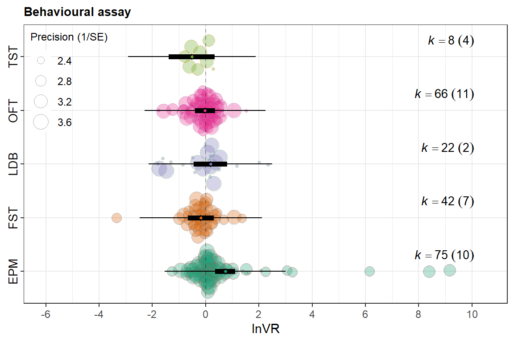
orchard_assay <- orchard_assay + labs(subtitle = "Behavioral assay")
orchard_lifestage <- orchard_lifestage + labs(subtitle = "Age at exposure")
orchard_genre <- orchard_genre + labs(subtitle = "Music meta-genre")
orchard_design <-orchard_design + labs(subtitle = "Experimental design")
# 2) Hide legends on all but ONE panel (choose bottom-right here)
orchard_assay <- orchard_assay + theme(legend.position = "none")
orchard_lifestage <- orchard_lifestage + theme(legend.position = "none")
# orchard_behaviour keeps the legend
# 3) Patch with your layout
patched_figure <- ( orchard_assay+orchard_lifestage) /
(orchard_genre + orchard_design) +
plot_annotation(tag_levels = "A") &
theme(
plot.tag = element_text(size = 12, face = "bold"),
plot.subtitle = element_text(size = 10, face = "bold")
)
# 4) Enforce identical lnRR scale and a single y-axis label across ALL panels
patched_figure <- patched_figure &
scale_y_continuous(
limits = c(-8, 12),
breaks = seq(-8, 12, by = 2),
minor_breaks = seq(-8, 12, by = 1)
) &
labs(y = expression(lnVR), x = NULL)
patched_figure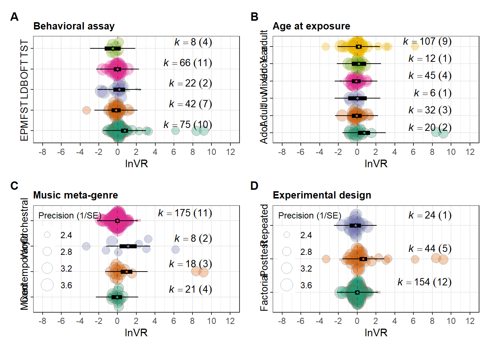
ggsave(filename = here("..","Plots", "patched_lnVR.pdf"),
plot = patched_figure,
dpi = 300, device = cairo_pdf,width = 10,
height = 10)
ggsave(filename = here("..","Plots", "patched_lnVR.jpg"),
plot = patched_figure,
width = 10,
height = 10,
dpi = 300)
Note
sessionInfo()R version 4.5.2 (2025-10-31 ucrt)
Platform: x86_64-w64-mingw32/x64
Running under: Windows 11 x64 (build 26200)
Matrix products: default
LAPACK version 3.12.1
locale:
[1] LC_COLLATE=English_Guernsey.utf8 LC_CTYPE=English_Guernsey.utf8
[3] LC_MONETARY=English_Guernsey.utf8 LC_NUMERIC=C
[5] LC_TIME=English_Guernsey.utf8
time zone: America/Edmonton
tzcode source: internal
attached base packages:
[1] stats graphics grDevices utils datasets methods base
other attached packages:
[1] multcomp_1.4-29 TH.data_1.1-5 MASS_7.3-65
[4] survival_3.8-6 mvtnorm_1.3-3 orchaRd_2.1.3
[7] metafor_4.8-0 numDeriv_2016.8-1.1 metadat_1.4-0
[10] Matrix_1.7-4 patchwork_1.3.2 lubridate_1.9.4
[13] forcats_1.0.1 stringr_1.6.0 dplyr_1.1.4
[16] purrr_1.2.1 readr_2.1.6 tidyr_1.3.2
[19] tibble_3.3.1 ggplot2_4.0.1 tidyverse_2.0.0
[22] knitr_1.51 here_1.0.2 dtplyr_1.3.2
[25] DT_0.34.0
loaded via a namespace (and not attached):
[1] beeswarm_0.4.0 gtable_0.3.6 xfun_0.56
[4] htmlwidgets_1.6.4 lattice_0.22-7 mathjaxr_2.0-0
[7] tzdb_0.5.0 vctrs_0.7.1 tools_4.5.2
[10] generics_0.1.4 parallel_4.5.2 sandwich_3.1-1
[13] pacman_0.5.1 pkgconfig_2.0.3 data.table_1.18.2.1
[16] RColorBrewer_1.1-3 S7_0.2.1 lifecycle_1.0.5
[19] compiler_4.5.2 farver_2.1.2 codetools_0.2-20
[22] vipor_0.4.7 htmltools_0.5.9 yaml_2.3.12
[25] crayon_1.5.3 pillar_1.11.1 nlme_3.1-168
[28] tidyselect_1.2.1 digest_0.6.39 stringi_1.8.7
[31] labeling_0.4.3 splines_4.5.2 latex2exp_0.9.8
[34] rprojroot_2.1.1 fastmap_1.2.0 grid_4.5.2
[37] cli_3.6.5 magrittr_2.0.4 withr_3.0.2
[40] scales_1.4.0 bit64_4.6.0-1 ggbeeswarm_0.7.3
[43] estimability_1.5.1 timechange_0.3.0 rmarkdown_2.30
[46] emmeans_2.0.1 bit_4.6.0 otel_0.2.0
[49] zoo_1.8-15 hms_1.1.4 coda_0.19-4.1
[52] evaluate_1.0.5 rlang_1.1.7 xtable_1.8-4
[55] glue_1.8.0 rstudioapi_0.18.0 vroom_1.7.0
[58] jsonlite_2.0.0 R6_2.6.1